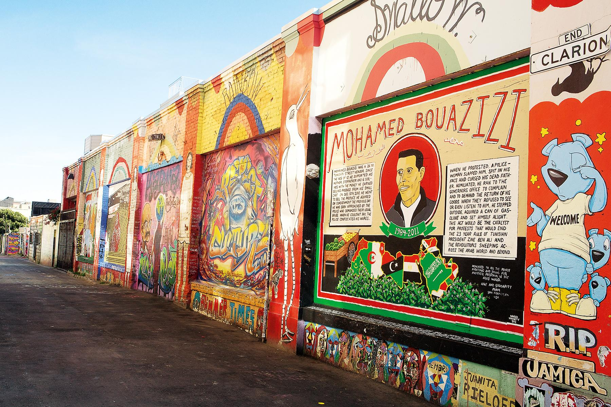
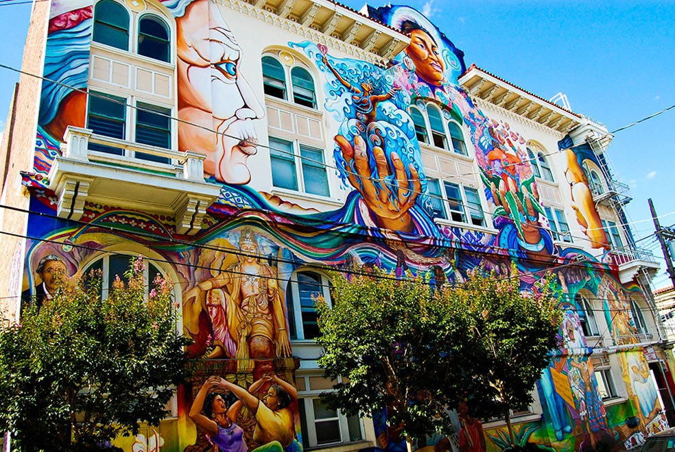
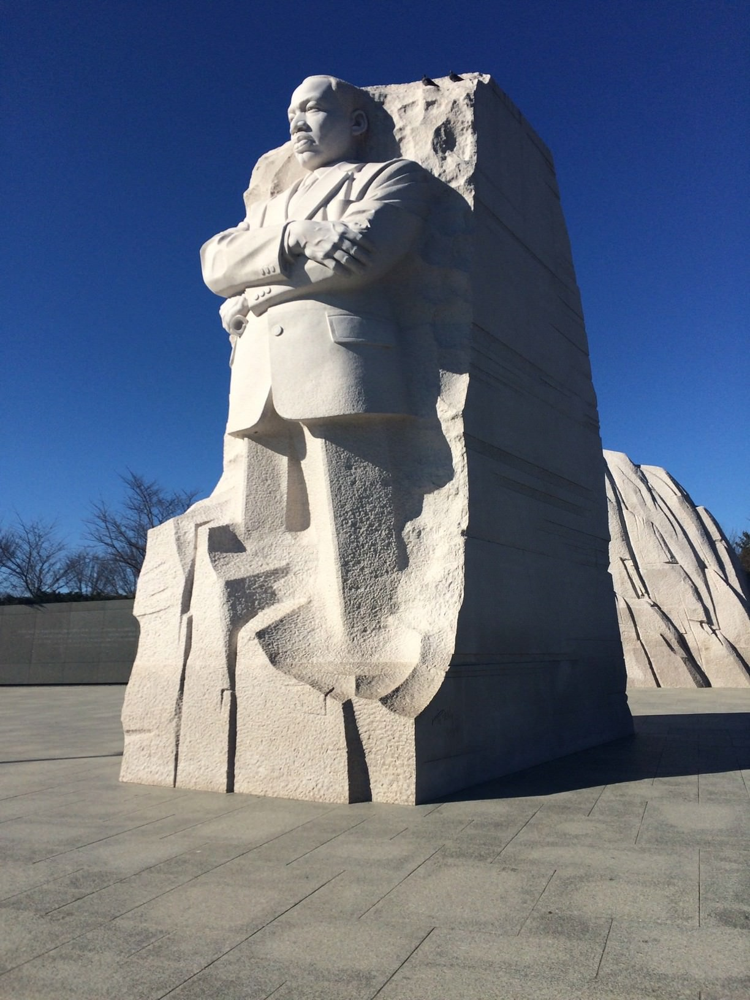
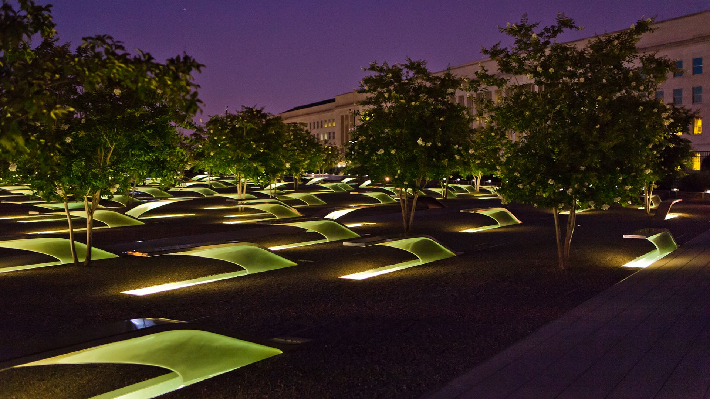

Reading #2 -- Site Specific
Q1. What are the differences between site-specific artwork and the idea of art interventions?
There are few differences between site-specific artwork and art interventions. Site-specific artwork is often made with the environment, location, or “site” taken into consideration when planning the artwork and the relationships it holds with the subject of the work. Examples of site-specific artwork can be but are not limited to landscaping, sited sculptures, environmental art, architecture, and performance art. In many cases, site-specific artwork is built to only exist in its designated “site” and can not exist outside of it. Whereas art interventions are when artists center their artwork with previously existing materials such as already existing artworks, spaces, buildings, audiences, or situations. The goal of art interventions is to protest against pre-existing rules set by a specific institution or group. Art interventions also occur outside the “art world”, many artworks enter outside the “art world” to challenge existing situations in those worlds, such as the political or economical scope.
Q2. What are the similarities and differences regarding the work of Walter De Maria and Banksy? include your thoughts on how their work might interpret ideas of site specificness and interventions.
The two striking differences between the work of Bansky and De Maria are the main subjects of their work and what type of interventions they are trying to address. Bansky often mocks consumerism, politics, nationalism, and capitalism by altering or changing icons that are associated with these topics. In his work Dismaland (2015), Bansky has based the dystopian playground off of Disneyland and the Disney franchise in order to comment on the consumer culture around the brand. While De Maria creates a reminder of nature to the viewer and evokes you to ponder about the relationship we share with it in his artworks. De Maria’s works can be an intervention on how we treat the environment and how we find value in material objects.
However, some similarities that I see in De Maria’s and Bansky’s artwork is that the two artists challenge the spaces that artwork would traditionally occupy. The two also challenge how the environment that a piece exists in affects the experience between viewer and object. In De Maria’s work The Lighting Field (1977), the viewer is taken out of the traditional gallery setting and forced to confront the vast landscape of the New Mexico desert to view the work. This site-specific work reminds the viewers of the existence of art outside art galleries and museums, also how art should not be kept inside the confines of a “room” or “installation” and that the scale or work should be able to exceed them. One could argue that Bansky’s artwork contains a similar message and challenges how we think about public spaces and what should exist in them.
Q3. What are some of the most common creative tactics and requirements that all the signs must share to be relevant and effective? This means ALL signs, from art signs to traffic signs to signs even in our home.
Some common tactics and traits that I see in signs that make them effective are simple composition, use of bold colors, high contrast, simplified forms and shapes, symbols, and easy-to-read fonts. These artistic qualities make signs easy to understand to the viewer just from a quick glance or from a faraway distance. Another factor that makes a sign effective is the location that it is placed and its relation to the sign. Such as in a school area there are signs with a person crossing reminding people to drive slowly because children are in the area.
Q4. What Kind of art, (not shown here), have you seen that was made in response to its location, its environment, a specific event, or situation. Please elaborate on its description, provide images if possible.
The Bay Area is a hot spot for a lot of public art. About five years ago I visited the Mission District in San Francisco and was able to view the large murals and street art there. A lot of the murals use imagery, symbols, and themes that reflect the people that live in that area and their cultural history.The composition murals also play around with the the architecture of the buildings. (I don't have pcitures from when I visited, but here are some from Google Images.)
 I have also seen a lot of memorials that are site-specific which makes sense to put a monument in the area in which the event occurred. Washington D.C. is filled with different site-specific memorials such as the National 9/11 Pentagon Memorial and the Martin Luther King Memorial.
 